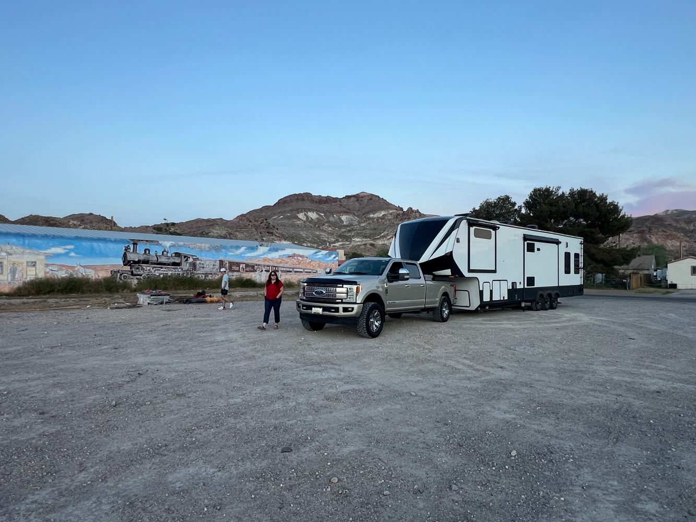
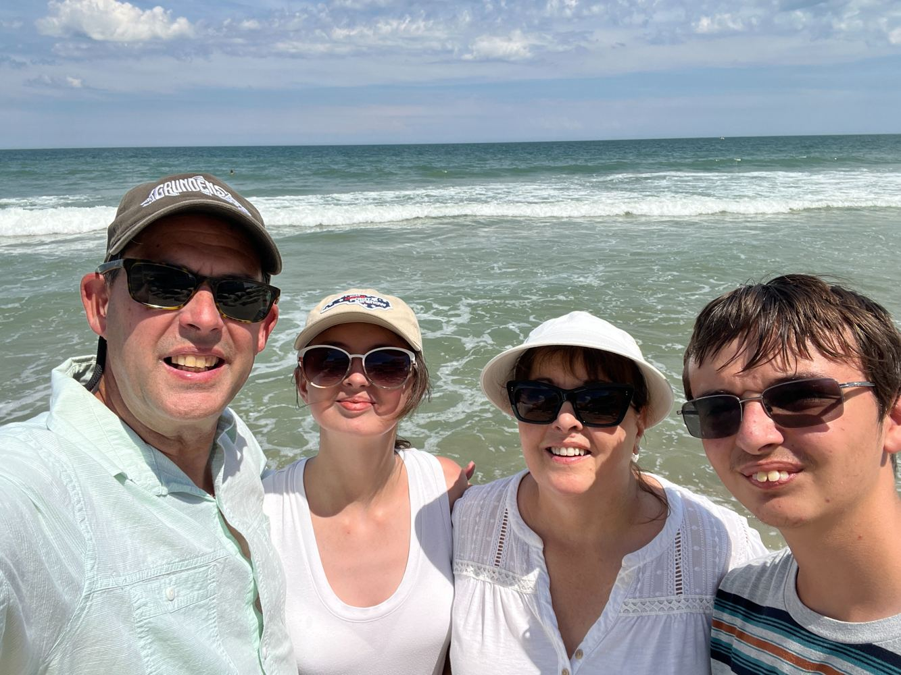

The Freedom to Explore · Life on the Road
The Freedom to Explore: What Full-Time RV Living Taught Us About America

What does freedom really mean?
For some people, it's financial independence. For others, it's the freedom to choose where they live, how they spend their time, or what they do with their lives.
For us, freedom began the day we pulled away from a house we'd called home for 27 years.
We had sold nearly everything we owned. There wasn't a storage unit full of furniture waiting for us somewhere. We weren't keeping one foot in our old life just in case we changed our minds.
And as we pulled away, we weren't sad.
We were celebrating.
We were debt-free, our home was on wheels, and for the first time in a very long time, we could point ourselves toward almost anywhere in the country and go.
The Freedom to Discover
I grew up traveling around the country in a Volkswagen camper bus.
Some of my favorite memories aren't of famous landmarks or major tourist attractions. They're of the places we happened upon along the way. Little towns, two-lane roads, and corners of America that most people would never think to visit.
Not because those places weren't worth seeing, but because they weren't destinations in a travel guide.
That experience stayed with me.
Today, when Janet and I start planning a trip, I still begin with a road atlas.
We have a bucket list, of course. There are places we want to see and people we want to visit. But those destinations are only the beginning.
I might notice a road winding through an interesting part of the country and wonder what's out there. I'll pull up satellite imagery, look at the road, and try to determine whether it's suitable for our fifth wheel.
Sometimes we take that road.
And sometimes we roll through a little town where the locals give us that holy cow, look at the size of that thing expression.
That's part of the fun.
We don't want to see everything. We want the freedom to discover things we never knew were there.

The Greatest Camping Trip Ever
When I was in grade school, I learned about Lewis and Clark.
I was fascinated by the idea that a group of people had traveled from St. Louis to the Pacific Ocean, making their way across a continent long before highways, gas stations, or campgrounds existed.
Then I discovered that their expedition had passed right through my geographical backyard.
Suddenly, history wasn't something that happened in a textbook. It had happened right where I lived.
The Lewis and Clark expedition was a government-sponsored mission with enormous challenges, and its history also includes the experiences and indispensable knowledge of the Native peoples whose homelands the expedition crossed.
But what captured my imagination as a boy was the scale of the journey itself.
Imagine setting out into country you've never seen, not knowing what lies beyond the next mountain or around the next bend in the river.
Some have called it the greatest camping trip ever.
I can understand why.
That fascination with exploration never left me.
Discovering America for Ourselves
Turn on the television or scroll through social media, and it's easy to get the impression that America is divided into two opposing camps.
The right tells one story. The left tells another.
But when you travel across this country, you discover something that doesn't always fit neatly into either version.
You meet people.
You stop in small towns. You visit local businesses. You talk with campground hosts, mechanics, shopkeepers, and fellow travelers.
You discover that Americans have different opinions, backgrounds, traditions, and ways of living. You also discover the everyday kindness, generosity, humor, and curiosity that rarely make the headlines.
That doesn't mean our differences aren't real or that every experience is wonderful.
It means the country is more complicated, more interesting, and often more welcoming than the picture we get from watching people argue about it.
There's no substitute for experiencing a place yourself.
And I believe the freedom to travel, explore, meet people, and form your own opinions is one of the great American ideals.

Freedom Doesn't Mean Everything Goes Right
We've had our share of setbacks.
Our fifth-wheel suspension failed in Georgia. We've dealt with repairs, unexpected expenses, and a truck engine failure that brought our travels to a halt.
Those aren't the experiences you imagine when you're dreaming about life on the road.
But they're part of it.
Sometimes freedom means choosing your next destination. Sometimes it means sitting in a campground, figuring out how to solve a problem you never expected.
We've learned that being free doesn't mean being free of responsibility, difficulty, or uncertainty.
It means having the opportunity to choose how we respond and what we do next.
And sometimes, it means accepting that the journey isn't going to follow the route you planned.

The Destination Is Only the Beginning
We still have a bucket list.
We still want to visit national parks, historic sites, beautiful landscapes, and places we've dreamed about seeing.
But we don't want a schedule so full that there's no room left for discovery.
If we're heading toward Mount Rushmore, we're just as interested in what we might find along the way.
If a little town catches our attention, we might stop.
If we discover a beautiful place we'd never heard of, we might stay another day.
And if we meet someone with a story worth hearing, we'd rather take the time to listen than rush off to check another attraction off the list.
That's what full-time RV living means to us.
It's not about how many states we've visited or how many famous landmarks we've photographed.
It's about having the freedom to experience the country, its history, its landscapes, and its people.
We spent 27 years living in one home.
Today, our home travels with us.
And while we don't know every place the road will take us, that's exactly the point.
The destination gives us a direction. The journey gives us the adventure.
And for us, that's freedom.
— Goseeda